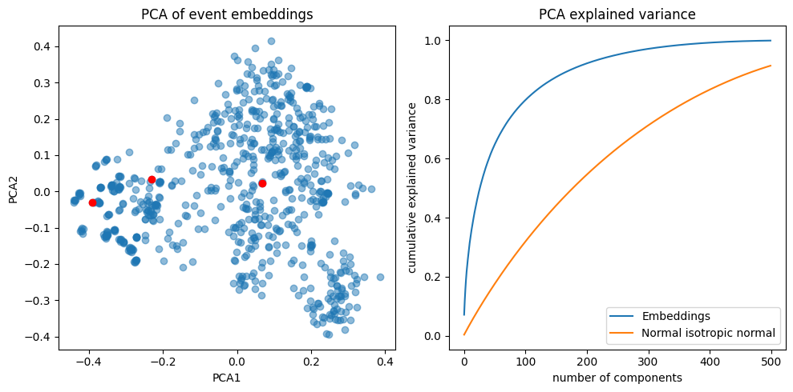
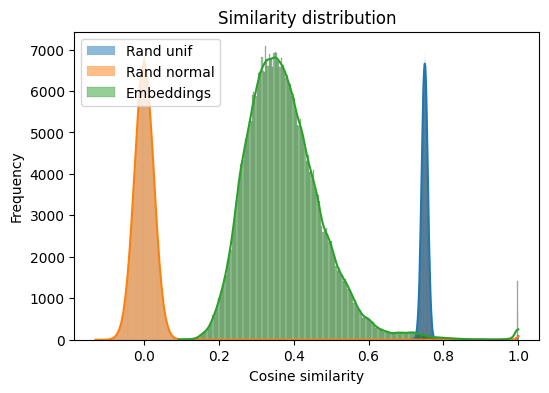
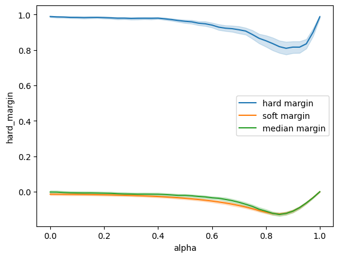
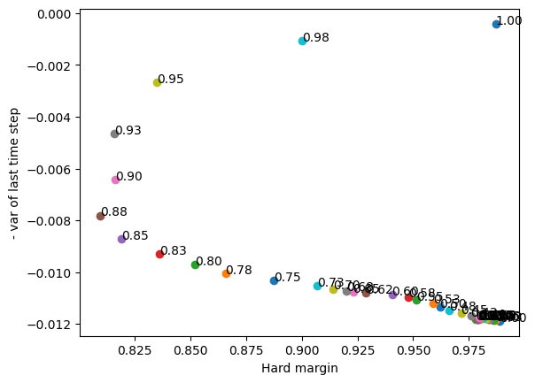
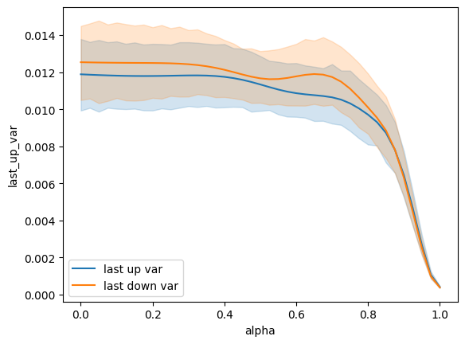
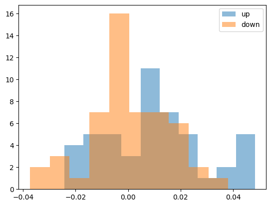

I am currently a grad student at the University of Michigan and like to attend seminars, lectures, and social events when I can. However, I often attend the same weekly seminars because sifting through all events (about 400/week on avgerage) to find ones that interest me is very time-consuming. Last semester, I tried feeding the events to ChatGPT and asking for recommendations, but they were not great.
So, given it’s break, I want to hack together a simple recommender system to do a better job. The goal is to get to an MVP that other students can use this weekend and iterate on it during the semester. Let’s see what we can come up with.
Overview
I want to keep the recommender as simple, hackable, and low-maintinance as possible. We’ll start with content-based filtering, where users are recommended similar events to ones they have previously enjoyed. To do so, we need a way for users to give feedback on events and a way of determining how similar two events are.
For feedback, we can allow users to downvote, upvote, and log if they add an event to their calendar.
To measure similarity we’ll represent our events as strings, obtain their embeddings, and use take cosine distance between them. To avoid tuning and hosting our own model, we’ll turn to OpenAI’s embedding API.
Because I’d like to implement changes quickly and don’t expect more than a handful of users, the backend will be a simple Pyton-Flask-SQLite CRUD app.As to the data, the university’s event page, Happening @ Michigan, is great. It provides openly available endpoints to fetch daily, weekly, and monthly events with all of their details in JSON format. Great! No scrapping is necessary. We can simply run a cronjob to fetch the events of the day or week to keep the system up-to-date 1.
Embedding events
Traditionally, one of the biggest challenges in recommender systems was coming up with vector representations of the items (movies, products, events, etc.) such that distances between are semantically meaningful. Luckily, it’s now very easy and convenient to throw items to a neural network and get such embeddings.
First, let’s take a look at three events and how we might represent their most relevant data fields as strings:
Stringify event
day_of_week =lambda datetime_str: datetime.strptime(datetime_str, '%Y%m%dT%H%M%S').strftime('%A')gget =lambda e, k, v: e.get(k, None) if e.get(k, None) isnotNoneelse vdef stringify_event(e, desc_len=800): limit =lambda s, n: s iflen(s) < n else s[:n-3] +'...' sponsors = [gget(s, 'group_name', '') for s in gget(e, 'sponsors', {})] maize_group = e.get('maizepages_import', {}).get('maizepages_group_name')if maize_group: sponsors.append(maize_group) o = [f"{e['event_type']}:{limit(gget(e, 'combined_title', ''), 200)}",f"{limit(gget(e, 'description', ''), desc_len)}",f"Where:{e['location_name']}', f'When:{day_of_week(e['datetime_start'])} {e['time_start'].split(':')[0]}', ]if sponsors: o.append(f"Sponsors:{', '.join(sponsors)}")return'\n'.join(o)
==================================================
Exhibition:Sea Monsters
The film follows a curious and adventurous Dolichorhynchops – familiarly known as a ‘dolly’ – as she travels through the most dangerous oceans in history. Along the way, she encounters long-necked plesiosaurs, giant turtles, enormous fish, fierce sharks, and the most dangerous sea monster of all– the mosasaur.
Where:Museum of Natural History
When:Sunday 12
Sponsors:Planetarium & Dome Theater at the Museum of Natural History
==================================================
Exercise / Fitness:Chair Aerobics
Lifetime Fitness classes are offered at Briarwood Mall in the JCPenney wing. No experience necessary. Classes are specifically designed for older adults, however, everyone is welcome. LTF classes are free, however, please consider making a $2/person per class donation as our classes are funded strictly through donations. No registration is necessary, simply attend when it fits your schedule. Chair Aerobics classes are carefully structured to include a warm-up, a pre-aerobic stretch, sitting and standing aerobics, strength training, a cooldown, and a final stretch.
Where:100 Briarwood Circle, Ann Arbor
When:Wednesday 09
Sponsors:Kinesiology Community Programs
==================================================
Tours:Coral Reef Tank Visit
Join Professor Jim Bardwell for a peek behind the scenes at his large coral reef tank featuring many species of coral, anemone, and fish. Explore reef ecology and, if you're lucky, get a glimpse of a reclusive octopus! 30 minutes, limit 12 people. This program takes place in the research area of the Biological Sciences Building and is recommended for ages 6 and up.
Space is available first come, first served. Sign up and meet at the Welcome desk.
Where:Museum of Natural History
When:Wednesday 12
Sponsors:Museum of Natural History
Note that we only include the day of the week and the start hour in the date to make it easier for the text model to make sense of. For now, we’ll use OpenAI’s text-embedding-3-small model, but we can try others later.
We now have a normalized 1536-dimentional vector representing each event and can use dot products to determine similarity. For example, for the events above we have:
Code
(E[ixs] @ E[ixs].T)[0]
array([1.00000009, 0.09336403, 0.61303273])
which makes sense since the first event is most similar to itself and then to the last event (which is also “sea themed”).
Before moving on, we should visualize the embeddings to make sure they are not collapsed.

The first two principal components have some structure (example events from above displayed in red). Also observe that almost all of the variance can be explained by the first 500/1535 components.

Another sanity check: the cosine similarities are nicely spread out and not clustered around zero, unlike random normal vectors.
KNN recommender
If we encode downvotes as -1, upvotes as 1, and “adds to calendar” as 2, we could implement a very simple recommender. Given a user and a new event, look up the event’s k-nearest neighbors (using embeddings and dot products) with ratings by the user and return the average rating. This average rating can be considered the estimated rating the user would give to the new event. Repeat for each new event and return events with the highest predicted ratings.
This system would be fairly simple to spin up, and we could even keep the KNN lookup constant by using approximate methods like those provided in faiss or any of the many vector databases.
However, we have to keep around a growing list of past events (at least their embeddings) and user ratings. To avoid running out of a cheap VM’s disk space (being very, very optimistic about user count), we could prune the oldest ratings once in a while or come up with some other simple scheme. But I wanted to try something else out.
Interest embeddings
What if we maintain a single embedding per user that represents their interests? This coud be as simple as the weighted average of all events the user has interacted with. To avoid storing all past embeddings and allow for changing preferences, we can use an exponentially moving average:
where w is the weight we give to the embedding of the event the user interacted with (event_emb) and alpha is tuneable parameter. This method is purely geometric: we move our interest embedding towards (w > 0) events we like and away from (w < 0) those we dislike.
While straightforward, this method has a few immediate drawbacks:
Preference dilution: we are blending all user interests into a single vector, potentially losing the multi-faceted nature of preferences. If a user has diverse interests, the averaged embedding could become less meaningful. Strong but infrequent interests will get washed out by more frequent but less important interactions.
Param sensitivity: The alpha parameter is critical but could be difficult to tune. Too high and system is slow to adapt to changing preferences. Too low and system “forgets” long-term interests too quickly.
Outlier sensitivity: One-off interactions could disproportionately shift interest embeddings.
Along with the usual cold-start, explanability, and other traditional recommerder challanges.
To alliviate preference dilution and the cold-start problem, we can let users manually input a list of interests, embed and use them along with usr_emb to make recommendations.
Code
def init_usr_emb(size = E.shape[1]): emb = np.random.normal(size = size)return emb / np.linalg.norm(emb)class User:def__init__(self, usr_id, init_usr_emb_fn = init_usr_emb):self.usr_id = usr_idself.usr_emb = init_usr_emb_fn()self.interests = {}def add_interests(self, interests, interest_embs =None):assertisinstance(interests, list) andisinstance(interests[0], str)if interest_embs isNone: interest_emb = get_embedding(interests)for i, e inzip(interests, interest_emb): self.interests[i] = eclass Recommender:def__init__(self, events, event_embs, vote_EMA_alpha, interest_weight, mmr_relevance_lambda, dedup_threshold =0.99):self.events = eventsself.event_embs = event_embsself.vote_EMA_alpha = vote_EMA_alphaself.interest_weight = interest_weightself.mmr_relevance_lambda = mmr_relevance_lambdaself.dedup_threshold = dedup_thresholddef recommend(self, user, n):# Calculate similarities event_event_sims =self.event_embs @self.event_embs.T usr_event_sims = (user.usr_emb[None, :] @self.event_embs.T).flatten()# For every event, the distance to the closest user interest interest_event_max_sims = np.zeros_like(usr_event_sims)if user.interests: interests_embs = np.vstack(list(user.interests.values())) interest_event_max_sims = np.max(interests_embs @self.event_embs.T, axis =0)# print(interest_event_max_sims.shape)# How good relevant events are (user behavior + interests, higher better) event_scores = (1-self.interest_weight) * usr_event_sims +self.interest_weight * interest_event_max_sims# print(event_scores.shape)# Deduplicate n_events = usr_event_sims.shape[0]for i inrange(n_events):for j inrange(i +1, n_events):if event_event_sims[i, j] >self.dedup_threshold:# We remove the later event (j > i) event_scores[j] =-np.inf# print('removed ',j, 'too similar to ',i)# MMR selected = [event_scores.argmax()]for _ inrange(n -1): mmr_scores = {}for e_ix inrange(n_events):if e_ix in selected: continue lamb =self.mmr_relevance_lambda relevance = event_scores[e_ix] max_sim_to_selected =max([event_event_sims[e_ix, s] for s in selected]) mmr_score = lamb * relevance + (1- lamb) *-max_sim_to_selected mmr_scores[e_ix] = mmr_score selected.append(max(mmr_scores, key = mmr_scores.get))# print(selected)return [self.events[i] for i in selected]def record_feedback(self, usr, event_id, rating):# Update usr_emb with weighted EMA w = {'up': 1., 'down': -1., 'cal': 2.}[rating] event_emb =self.event_embs[event_id] alpha =self.vote_EMA_alpha usr.usr_emb = alpha * usr.usr_emb + (1- alpha) * w * event_emb usr.usr_emb /= np.linalg.norm(usr.usr_emb)
Code
# Sanity check: should get recommended similar events to an event if we init usr_emb with itr = Recommender(events, E, vote_EMA_alpha =0.1, interest_weight =0.7, mmr_relevance_lambda =0.25, dedup_threshold =0.99)ix =10# print(stringify_event(events[ix]))usr = User(0)#, init_usr_emb_fn=lambda: E[ix])usr.add_interests(['music', 'statistics', 'computers'])for e in r.recommend(usr, 10):print('='*50)print(stringify_event(e))
[274, 3, 132, 25, 112, 291, 657, 12, 344, 585]
==================================================
Lecture / Discussion:MPSDS JPSM Seminar Series - Statistics is a Core Competency for Sound Health Policy: Madhumita (Bonnie) Ghosh-Dastidar - Rand
MPSDS JPSM Seminar Series
March 12, 2025
12:00-1:00 pm EDT
In person, Room G300 Perry Building, and via Zoom.
The Zoom call will be locked 10 minutes after the start of the presentation.
Statistics is a Core Competency for Sound Health Policy
The American Statistical Association vision imagines a world that relies on data and statistical thinking to drive discovery and inform decisions. We know the challenges to attaining this vision are significant, so collaboration is key. As a statistician working to inform policy and decision making, I know it will take collaboration across disciplines to address society’s biggest challenges—e.g., pandemic recovery, climate change, precision medicine, education reform, or criminal justice. In an era of data ubiquity and rapid analysi...
Where:Perry Building
When:Wednesday 12
Sponsors:Michigan Program in Survey and Data Science, Institute for Social Research, Survey Research Center
==================================================
Other:Spring Break
Lets go rowing
Where:Gainesville, GA
When:Sunday 00
Sponsors:Maize Pages Student Organizations, Men's Rowing
==================================================
Exercise / Fitness:Strength, Stretch and Balance
Lifetime Fitness classes are offered at Briarwood Mall in the JCPenney wing. No experience necessary. Classes are specifically designed for older adults, however, everyone is welcome. LTF classes are free, however, please consider making a $2/person per class donation as our classes are funded strictly through donations. No registration is necessary, simply attend when it fits your schedule.This class is open to everyone. The goal of this class is to work on your strength, flexibility, and balance in order to improve fitness levels and the ease of everyday tasks.
Where:100 Briarwood Circle
When:Tuesday 09
Sponsors:Kinesiology Community Programs
==================================================
Exhibition:Sky Tonight
A live presentation on what to find in the sky tonight and for the coming few weeks. This presentation includes how to find the cardinal directions with the North Star, current and upcoming constellations, visible planets, a few deep sky objects depending on the season, and other interesting astronomical visualizations. If you want to be able to look up from your own backyard and know what to look for, this is the show for you.
Where:Museum of Natural History
When:Sunday 13
Sponsors:Planetarium & Dome Theater at the Museum of Natural History
==================================================
Performance:Jiani Wu, piano
Graduate student Jiani Wu performs a recital.
Where:Earl V. Moore Building
When:Monday 19
Sponsors:School of Music, Theatre & Dance
==================================================
Careers / Jobs:A Recruiter's Perspective on Updating Your LinkedIn Profile (Virtual)
Whether you're a recent graduate, a seasoned professional, or a member of the military looking for your new career, ourtraining session is designed for you. Learn the latest tips and strategies to enhance your LinkedIn profile, attract recruiters,and network effectively. This virtual event gives insight on what recruiters are looking for when reviewing your LinkedIn Profile. It also answers questions about networking via LinkedIn and how to maximize your page. Don't miss this opportunity to boost your online presence and take your career to the next level!
Where:
When:Wednesday 14
Sponsors:University Career Center
==================================================
Film Screening:Korean Cinema NOW | Road to Boston | 1947 보스톤: 2023 ‧ Drama ‧ 1h 48m ‧ Rated PG-13
View the trailer at: https://www.youtube.com/watch?v=_K4B9w0FLBk
"If the country gained independence, our records should naturally become independent too!"
In the 1936 Berlin Olympics, marathon gold medalist Son Ki-jeong set a world record. On the podium, as the Japanese national anthem "Kimigayo" played, he covered the Japanese flag on his chest with a potted plant, making him an instant national hero. However, due to Japanese oppression, he could no longer run. After Korea's liberation, in Seoul in 1947, Son Ki-jeong approaches Seo Yoon-bok, a promising marathon runner considered the next Son Ki-jeong, with an unexpected proposal to compete in the Boston Marathon. He suggests running to reclaim the glory of the Berlin Olympics that had been attributed to Japan, this time with t...
Where:State Theater (233 S State St, Ann Arbor)
When:Saturday 13
Sponsors:Nam Center for Korean Studies, International Institute, Asian Languages and Cultures
==================================================
Exhibition:The Bibliophile and the Library: Private-Press Books from the Collection of Bill Heidrich
View beautifully illustrated books that stand as remarkable testaments to the work of twentieth-century small private presses, which, in contrast to the trend of mass commercialization, produced limited editions that celebrated the uniqueness of manual craftsmanship. Features such as exquisite typeface design, letterpress printing, handmade paper, traditional illustration techniques like woodcut and engraving, and the inclusion of original art by renowned artists highlight the presses' dedication to artistry and detail.
The display opens with an edition of "The Works of Geoffrey Chaucer," published in 1896 by William Morris at his Kelmscott Press, a pivotal press that greatly influenced the development of the private press movement as a means of preserving and revitalizing the fine p...
Where:Hatcher Graduate Library
When:Sunday 09
Sponsors:University Library
==================================================
Social / Informal Gathering:Deutschtisch im Max Kade Haus
Deutschtisch is a weekly event in the North Quad dining hall for Max Kade residents and visitors from outside of Max Kade Haus to speak German during a meal.
Where:North Quad
When:Wednesday 18
Sponsors:Germanic Languages & Literatures, Max Kade German Residence
==================================================
Workshop / Seminar:Preprint Algebraic Geometry Seminar: Flat pushforwards of Chern classes and the smoothability of cycles below the middle dimension, after Kollár and Voisin: Hyunsuk Kim (UM)
https://arxiv.org/abs/2311.04714
Where:East Hall
When:Friday 16
Sponsors:Preprint Algebraic Geometry Seminar - Department of Mathematics, Department of Mathematics
Tuning
The prompts
system_prompt =lambda persona_str, n_weeks: f'''Asume the following persona and use it to answer all of the following questions.Persona:{persona_str}You will help evaluate a recommender system for events. You will be given a list of {n_weeks} events each "week" and asked to rate them.'''def weekly_prompt(recommended_events): formated_events ='\n'.join([f"---\nEvent {i}:\n"+ stringify_event(e, 200) for i,e inenumerate(recommended_events)])returnf'''Here are the events for this week:{formated_events} For each event, provide a "vote": - "up" if you are interested in the event and would consider attending - "cal" if you would actively try to add it to your calendar and attend - "down" if you are not interested and would not attend - "neutral" if you are indifferent and have no strong opinion Additionally, rate these weekly recommendations as a whole on a scale of 1-10, where: - 1 = "Completely dissatisfied; none of these events appeal to me" - 5 = "Neutral; some events are okay, but the list isn't exciting" - 10 = "Extremely satisfied; most or all events are highly appealing" Consider factors like how well the events match your (persona's) interests, the variety, and overall excitement. Return your ratings in JSON format, for example:{{ "event_ratings": [{{"event_id": 0, "vote": "down/neutral/up/cal"}},{{"event_id": 1, "vote": "down/neutral/up/cal"}}, ... ], "weekly_satisfaction": ?}} '''
Code
def eval_recomender(persona_json, persona_str, vote_EMA_alpha, interest_weight, mmr_relevance_lambda, dedup_threshold, n_recommendations):# Form user usr = User(0)assert'interests'in persona_json, 'No interests in persona: '+ persona_json usr.add_interests(persona_json['interests']) evaluations = []# Simulate multiple weeksfor i, week_str inenumerate(sorted(os.listdir('data/semester_data'))):# Load week datawithopen(f'data/semester_data/{week_str}/events.json', 'r') as f: week_events = json.load(f) week_embs = np.load(f'data/semester_data/{week_str}/embs.npy')# Get recommendations for that weekprint(f'\tweek: {i}, # events: {len(week_events)}') r = Recommender(week_events, week_embs, vote_EMA_alpha, interest_weight, mmr_relevance_lambda, dedup_threshold) recommended_events = r.recommend(usr, n_recommendations)# Ask Gemini to evaluate client = genai.Client(api_key = os.environ.get('GEMINI_API_KEY')) model ='gemini-2.0-flash-lite' contents = [types.Content(role ='user', parts = [types.Part.from_text(text = weekly_prompt(recommended_events))])] gen_config = types.GenerateContentConfig( temperature =1, top_p =0.95, top_k =40, max_output_tokens =8192, response_mime_type ='application/json', system_instruction = [types.Part.from_text(text = system_prompt(persona_str, n_recommendations))], ) response = client.models.generate_content(model = model, contents = contents, config = gen_config) evaluation = json.loads(response.text)# Record feedbackfor rating in evaluation['event_ratings']:if rating['vote'] in ['up', 'down', 'cal']: r.record_feedback(usr, rating['event_id'], rating['vote'])elif rating['vote'] !='neutral': print('Invalid vote:', rating) evaluation['week'] = i evaluations.append(evaluation)return evaluations
Code
from itertools import product
Code
n_recommendations =30dedup_threshold =0.99n_personas =10withopen('data/personas.json', 'r') as f: personas = json.load(f)# random.shuffle(personas)df = []for i_p, persona_json inenumerate(personas[:n_personas]): persona_str ='\n'.join([f'- {k}: {v}'for k, v in persona_json.items()])print(f'Persona {i_p+1}/{n_personas}:\n{persona_str}') for i, (vote_EMA_alpha, interest_weight, mmr_relevance_lambda) inenumerate(product( [0.75, 0.8, 0.85, 0.9, 0.95, 0.99], np.linspace(0.1, 0.9, 5), np.linspace(0.1, 0.9, 5) )):print(f'{i} / {6*5*5}', vote_EMA_alpha, interest_weight, mmr_relevance_lambda) evaluations = eval_recomender( persona_json, persona_str, vote_EMA_alpha, interest_weight, mmr_relevance_lambda, dedup_threshold, n_recommendations )for evaluation in evaluations: df.append({'week': evaluation['week'],'persona_id': i_p,'persona': persona_json,'vote_EMA_alpha': vote_EMA_alpha,'interest_weight': interest_weight,'mmr_relevance_lambda': mmr_relevance_lambda,'weekly_satisfaction': evaluation['weekly_satisfaction'],**{d['event_id']:d['vote'] for d in evaluation['event_ratings']} })break df = pd.DataFrame(df) df.to_csv('data/evaluations.csv', index=False)break
Persona 1/10:
- name: Aisha Khan
- age: 20
- gender: Female
- ethnicity: Pakistani-American
- hometown: Chicago, Illinois
- level: Undergraduate
- year: Junior
- major: Computer Science
- type of school: Public University
- backstory: Aisha, the first in her family to attend college, feels a significant responsibility to succeed. Witnessing her parents' sacrifices instilled in her a strong work ethic, however, she sometimes struggles to balance her demanding coursework with her role as a caregiver for her younger siblings. Despite these challenges, she excels in her coding projects and finds solace in building tech communities for underrepresented minorities.
- interests: ['Cybersecurity, especially ethical hacking', 'Playing competitive online games', 'Pakistani and Bollywood films']
- short-term goal: Successfully complete a challenging software engineering project by the end of the semester.
0 / 150 0.75 0.1 0.1
week: 0, # events: 509
week: 1, # events: 570
week: 2, # events: 551
week: 3, # events: 560
week: 4, # events: 538
week: 5, # events: 519
week: 6, # events: 594
week: 7, # events: 511
week: 8, # events: 528
week: 9, # events: 623
week: 10, # events: 561
week: 11, # events: 202
week: 12, # events: 501
week: 13, # events: 351
week: 14, # events: 160
week: 15, # events: 62
Code
pd.DataFrame(df)
week
persona_id
persona
vote_EMA_alpha
interest_weight
mmr_relevance_lambda
weekly_satisfaction
0
1
2
3
4
5
6
7
8
9
0
0
0
{'name': 'Jackson Miller', 'age': 28, 'gender'...
0.75
0.1
0.1
4
neutral
down
up
down
down
down
down
down
down
cal
Code
def alpha_analysis(alpha, n_up, n_down, n_weeks, seed):# set seed random.seed(seed) np.random.seed(seed) r = Recommender(events, E, alpha) usr = User(0)# data = [{# What events we up/down vote each week'up': random.sample(range(len(events)), n_up),'down': random.sample(range(len(events)), n_down),'up avg. rank': {}, # judging week -> avg rank'down avg. rank': {}, } for week inrange(n_weeks) ]for w_i, week_data inenumerate(data):# Choose n_up random events to upvote, n_down to downvote, and randomize the order in which we vote up_events = week_data['up'] down_events = week_data['down'] voted = up_events + down_events random.shuffle(voted)for i in voted: rating ='up'if i in up_events else'down' r.record_feedback(usr, i, rating) sims = (usr.usr_emb[None, :] @ E.T).flatten()# Get all ranks at once (more efficient) sorted_indices = np.argsort(sims)[::-1] # descending order ranks = {idx: rank for rank, idx inenumerate(sorted_indices)}# Log info for all preceding weeksfor w_j, w_data inenumerate(data[:w_i+1]):for evs, field inzip([w_data['up'], w_data['down']], ['up avg. rank', 'down avg. rank']): avg_rank = np.mean([ranks[e] for e in evs]) w_data[field][w_i] = avg_rank dists_from_best = [] stds = []for week_data in data:for vote in ['up', 'down']: rank_path = np.array(list(week_data[f'{vote} avg. rank'].values())) dist_from_best = np.abs(rank_path -0if vote =='up'elselen(events)) std = np.std(rank_path) dists_from_best.append(np.mean(dist_from_best)) # average distance from best for this path stds.append(std)return np.mean(dists_from_best), np.mean(stds)
df = pd.DataFrame(df)sns.lineplot(data = df, x ='alpha', y ='hard_margin', label ='hard margin')sns.lineplot(data = df, x ='alpha', y ='soft_margin', label ='soft margin')sns.lineplot(data = df, x ='alpha', y ='median_margin', label ='median margin')

Code
tmp = df.groupby('alpha', as_index =False).mean()for alpha, x, y inzip(tmp['alpha'], tmp['hard_margin'].to_numpy(), -tmp['last_up_var'].to_numpy()): plt.text(x, y, f'{alpha:.2f}') plt.scatter(x,y)plt.xlabel('Hard margin')plt.ylabel('- var of last time step')
Text(0, 0.5, '- var of last time step')

Code
sns.lineplot(data = df, x ='alpha', y ='last_up_var', label ='last up var')sns.lineplot(data = df, x ='alpha', y ='last_down_var', label ='last down var')

Code
up_last_sims = [events_to_sim_paths[e][-1] for e in events_to_rank_paths if events_to_vote_type[e] =='up']down_last_sims = [events_to_sim_paths[e][-1] for e in events_to_rank_paths if events_to_vote_type[e] =='down']up_last_sims = np.array(up_last_sims)down_last_sims = np.array(down_last_sims)plt.hist(up_last_sims, alpha =0.5, label ='up')plt.hist(down_last_sims, alpha =0.5, label ='down')plt.legend()

Tuning
Code
# Ask chatGPT to take on personas and vote on events withopen('data/semester_events.json', 'r') as f: semester_events = json.load(f)len(semester_events)
7340
Implementation
Assume we have embedded and clustered the bunch of past events and have the centroids. The basic idea is to fetch the events for the upcoming week Sundays and embed them. We then compute their distances to the centroids (or even the weights) and store them (the NumPy arrays as blobs in the db). And those are the only things we batch.
I drew some inspiration and referenced from karpathy’s arxiv-sanity lite. For auth, I decided to go with Signin With Google as the university is on GSuite. Users can also join a community mailing list to get reminded weekly when recommendations are ready.
The code is openly available here and site hosted here.
A lot of room
for improvement. For example:
Once the clusters and centroids are computed, there is no way to change them. Either make sure they are good enough so that we never have to change them or come up with something different.
Find a way to set parameters (learning rate, inv. temperature) in a more principled way, or test thoroughly. Should each user have their own learning rate?
And I’m sure I’ll come up with others.
Footnotes
Unfortunatly not all departments / organizations post their events to the main events feed, but finding and maintaining other feeds would be very time consuming.↩︎